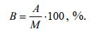
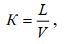
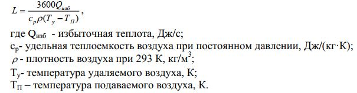

План
1. Лучшая профилактика профзаболеваний.
2. Основные средства индивидуальной защиты.
3. Влияние микроклимата на человека.
4. Гигиеническое нормирование производственного микроклимата.
5. Способы нормализации микроклимата производственных помещений.
Лучшая профилактикапрофзаболеваний – это полноеисключение контактаработающих с ВВ за счет механизации и автоматизации процессов,разработка новых технологийбез использования ВВ,замена ВВ на менее вредныеи т.д. Например, свинцовые белила заменены цинковыми, вместо органических растворителей для обезжиривания деталей и оборудования широко используются водные моющие растворы и т.д.
Снижению поступления в воздух рабочих зон ВВ способствует хорошая герметизация оборудования; ведение процессов в вакууме; применение замкнутых технологических циклов; замена устаревшего оборудования; своевременный и качественный ремонт оборудования.
Пылевыделение меньше при мокрых способах переработки материалов; выпуск конечных продуктов в непылящих формах, что может снизить пылеобразование в 5-10 раз; применение при упаковке и затаривании сыпучих материалов специальных герметичных вентилируемых укрытий с вмонтированными рукавами с перчатками.
В обеспечении чистоты воздуха имеет значение и отделка помещений материалами не адсорбирующими ВВ, приточная и вытяжная вентиляция, озеленение территории предприятия, размещение дренажных устройств (воздушек), хорошая очистка выбросов, герметизация оборудования и т.д.
К профилактическим мероприятиям относятся медицинские осмотры, профилактическое питание, соблюдение правил личной гигиены.
При неэффективности коллективных средств защиты применяют СИЗ. СИЗ подразделяются: на изолирующие костюмы, средства защиты органов дыхания, специальную одежду, специальную обувь, средства защиты рук, головы, лица, глаз, органов слуха, защитные дерматологические средства.
Средства индивидуальной защиты органов дыхания (СИЗ ОД) предназначены для защиты от воздействий вредных газов, паров, дыма, тумана и пыли, содержащихся в воздухе рабочей зоны, а также для обеспечения кислородом при недостатке его в окружающей атмосфере. СИЗ ОД подразделяются: на противогазы, респираторы, пневмошлемы, пневмомаски. Они бывают фильтрующие и изолирующие. Фильтрующие СИЗ ОД подразделяют на респираторы и противогазы. Респираторы бывают противогазовые, противоаэрозольные и универсальные. Изолирующие подразделяют на шланговые и автономные. Шланговые СИЗ бывают самовсасывающие и с принудительной подачей воздуха. Автономные бывают с запасомсжатогоилисжиженного воздуха,О2, схимически связанным О2.
Наибольшее применение находят: противоаэрозольные фильтрующие респираторы. Они делятся на два типа: патронные, у которых лицевая часть и фильтрующий элемент выделены в отдельные самостоятельные узлы; и фильтр-маски, у которых фильтрующий элемент одновременно служит и лицевой маской. По способу вентиляции противоаэрозольные респираторы бывают бесклапанные и клапанные, по условиям эксплуатации – одно- и многоразового использования.
Респираторы различают по модификации. Цифры 200, 40 и 5 означают, что респираторы предназначены для защиты от мелко- и среднедисперсных аэрозолей при их концентрациях в воздухе, превышающих ПДК в 200, 40 и 5 раз. Для защиты от грубодисперсной пыли (более 1 мкм) применение любого из респираторов возможно при запыленности, превышающей ПДК не более чем в 200 раз.
Кспецодеждеотносятся: куртки, брюки, комбинизоны, плащи, фартуки, рукавицы, жилеты, перчатки, нарукавники, бахилы, головные уборы, наколенники и т.д.
Специальная обувьзащищает от механических травм, химических и тепловых ожогов, низких и высоких температур, пыли, влаги: сапоги, ботфорты, ботинки, туфли, калоши, боты, бахилы.
Средства защиты рук: перчатки, рукавицы, напальчники, мази и пасты.
Длязащиты глазприменяют очки. Длязащиты лицаприменяются щитки.
Влияние неблагоприятных метеорологических условий на человека.
Микроклимат помещения – это сочетание температуры воздуха, скорости его движения, относительной влажности, теплового излучения от нагретых поверхностей.
При выполнении работы на открытых площадках, метеорологические условия определяются климатическим поясом и сезоном года.
Жизненные процессы человека сопровождаются образованием теплоты в состоянии покоя от 4-6 кДж/мин, при очень тяжелой работе до 33-42 кДж/мин. Параметры микроклимата могут изменяться в широких пределах, но необходимым условием жизнедеятельности человека является сохранение постоянства температуры тела.
При оптимальных параметрах микроклимата человек испытывает состояние теплового комфорта. При отклонении – в организме человека происходят различные процессы, направленные на регулирование теплопродукции и теплоотдачи. Способность человека сохранять постоянство температуры тела получила названиетерморегуляции.
При 15-25оС теплопродукция организма находится на постоянном уровне –зона безразличия. При понижении температуры происходит повышение теплопродукции за счет мышечной активности (проявлением которой является, например, мышечная дрожь) и усиления обмена веществ. При повышении температуры воздуха усиливаются процессы теплоотдачи во внеш-нюю среду тремя путями:конвекцией, излучением и испарением. При 20оС теплоотдача конвекцией составляет 25 – 30 %, излучением – 45 %, испарением – 20-25 %. При изменении температуры, влажности, скорости движения воздуха, характера выполняемой работы эти соотношения существенно изменяются. При 30оС отдача теплоты испарением равна сумме теплоты излучения и конвекции. При 36оС отдача теплоты происходит уже полностью за счет испарения.
При испарении 1 г воды организм теряет около 2,5 кДж теплоты. Испарение, в основном, происходит с поверхности кожи, и очень мало через дыхательные пути (10-20 %). При н.у. организм теряет в сутки с потом ~0,6 л жидкости. При тяжелой физической работе и температуре более 30оС количество теряемой жидкости может достичь 12 л. При этом влага на коже не только не способствует отдаче теплоты, а, наоборот, только препятствует этому.
При 30оС и выше и большом тепловом излучении от нагретых поверхностей наступает нарушение терморегуляции организма, что может привести к перегреву организма. При этом нарастает слабость, головная боль, шум в ушах, искажение цветового восприятия, тошнота, рвота, повышение температуры тела. Дыхание и пульс учащаются, артериальное давление вначале возрастает, а потом падает. В тяжелых случаях наступает тепловой, а при работе на открытом воздухе – солнечный удар. Нарушение водносолевого баланса ведет к судорожной болезни, слабости, головной боли, резким судорогам в конечностях. При длительном воздействии теплового излучения может развиться профессиональная катаракта.
Перегрев организма сильно сказывается на снижении работоспособности и мышечной силы рук, примерно в 2 раза снижается способность к тонкой координации движений.
Охлаждение.
Низкая температура вызывает местное и общее охлаждение организма, что может стать причиной заболеваний: миозитов (myos – мышца; воспаление скелетных мышц), невритов (воспаление нерва), радикулитов и др., а также простудных заболеваний. Охлаждение снижает частоту сердеч-ных сокращений, развивает процессы торможения в коре головного мозга, уменьшает работоспособность. Низкие температуры могут привести к обморожениям и даже смерти.
Влажностьвоздуха определяется содержанием в нем водяных паров. Различают абсолютную, максимальную и относительную влажность воздуха.
Абсолютная влажность (А) – это масса водяных паров в определенном объеме воздуха, максимальная (М) – максимально возможное содержание водяных паров в воздухе при данной температуре (состояние насыщения), Относительная влажность (В) определяется отношением:
Физиологически оптимальной является относительная влажность в пределах 40… 60 %. Повышенная влажность воздуха (более 75…85 %) в сочетании с низкими температурами оказывает значительное охлаждающее действие, а с высокими – способствует перегреву организма. Относительная влажность менее 25 % также неблагоприятна для человека, т.к. приводит к высыханию слизистых оболочек и снижению защитной деятельности мерцательного эпителия верхних дыхательных путей.
Подвижность воздуха.
Человек ощущает движение воздуха при его скорости 0,1 м/с. Легкое движение воздуха при обычных температурах способствует хорошему самочувствию, сдувая обволакивающий человека насыщенный водяными парами и перегретый слой воздуха. Большая скорость движения воздуха при низких температурах увеличивает потерю тепла конвекцией и испарением и ведет к сильному охлаждению организма.
Эффективная температурахарактеризует ощущения человека при одновременном воздействии температуры и движения воздуха.Эффективноэквивалентная температураучитывает еще и влажность воздуха.
Тепловое излучениесвойственно всем телам с температурой выше абсолютного нуля. Его воздействие на организм человека зависит от длины волны и интенсивности потока, величины облучаемого участка тела, времени облучения, угла падения лучей, вида одежды человека. Красные лучи и инфракрасные лучи (0,78…1,4 мкм) обладают большой проникающей способностью, т.к. плохо задерживаются кожей. Они могут привести к катаракте.
Инфракрасное излучение встречается в горячих цехах (10 мкм). При интенсивности облучения более 5,0 кВт/м2в течение 2…5 мин человек ощущает очень сильное тепловое воздействие.
Допустимый для человека уровень интенсивности теплового облучения на рабочих местах составляет 0,35 кВт/м2.
Гигиеническое нормирование производственного микроклимата.
Нормирование метеорологических условий основано на дифференци- рованной оценке оптимальных и допустимых метеорологических условий в рабочей зоне в зависимости от тепловой характеристики помещения, категории работ по тяжести и времени года.
Оптимальные климатические условия – когда сохраняются нормальные функциональные состояния организма без напряжения механизма терморегуляции. Ощущается тепловой комфорт и хорошая работоспособность.
Допустимыемикроклиматические условия – это такие параметры микро-климата, которые при длительном и систематическом воздействии на человека могут вызывать преходящие и быстро нормализующиеся изменения функционального и теплового состояния организма и напряженную работу механизма терморегуляции, не выходящую за пределы физиологически приспособительных возможностей.
По тепловой характеристике производственные помещения делятся на помещения с незначительными избытками теплоты (не более 23 Дж/(м3·с) и значительными избытками теплоты, превышающими 23 Дж/(м3·с), их относят к категории горячих цехов.
Способы нормализации микроклимата производственных помещений.
Решение этой задачи идет в следующих направлениях: рациональные объемно-планировочные и конструкторские решения производственных зданий; рациональное размещение оборудования; механизация и автоматизация производственных процессов; дистанционное управление и наблюдение; внедрение более рациональных технологических процессов и оборудования; рациональная тепловая изоляция оборудования; защита работающих различными видами экранов; рациональная вентиляция и отопление; рационализация режимов труда и отдыха, использование СИЗ.
Вентиляция производственных помещенийклассифицируется по способу и направлению перемещения воздуха, зоне действия, времени работы. Различают естественную и механическую вентиляцию. Естественную вентиляцию подразделяют на организованную (канальную и бесканальную – аэрацию) и неорганизованную.
Аэрация –осуществляется за счет разности гравитационного давления наружного и внутреннего воздуха и действия ветра.
Аэрация возможна при наличии отверстий достаточной площади. Аэрация применима в горячих цехах.
Неорганизованная вентиляция – через щели, окна, двери и т.п. Перемещение воздуха при помощи вентилятора – механическая вентиляция.
Вентиляция бывает приточной и вытяжной. По зоне действия различают вентиляцию общеобменную, местную и смешанную. Местная вентиляция может быть приточной (для подачи чистого воздуха на рабочее место) и вытяжной (удаления загрязненного воздуха).
Интенсивность вентиляции характеризуетсякратностью воздухообмена,которая подсчитывается по формуле:
где L – объем воздуха подаваемого или удаляемого из помещения, м3/ч; V – объем вентилируемого помещения, м3.
Местную приточную вентиляцию осуществляют в виде воздушных душей или воздушных оазисов.Воздушный душ –это подача на человека струи воздуха заданных параметров (температура, влажность, скорость). Для устройства воздушного оазиса часть рабочей площадки отделяют стеклянными щитами, между которыми оставляют проходы. Воздушное душирование предусматривают на рабочих местах для воздействия на работающих лучистой теплоты с интенсивностью 0,35 кВт/м2и более.
Воздушная завесасоздается струей воздуха, поступающей из узкой длинной щели под некоторым углом навстречу потоку холодного воздуха.
Местная вытяжная вентиляцияосуществляется с помощью местных и бортовых отсосов , патрубков, решеток, панелей и т.п.
Процесс создания и автоматического поддержания в производственном помещении определенных параметров воздушной среды называюткондиционированием.
Аварийная вентиляциякак правило является вытяжной и предназначена для быстрого удаления из помещений значительных объемов воздуха с большим содержанием вредных и взрывоопасных веществ, поступающих в помещение при нарушении технологического режима.
Объем L подаваемого в помещение свежего воздуха, необходимого для удаления избыточной теплоты, определяется следующим соотношением:
Минимальное количество воздуха, подаваемое в производственное помещение в расчете на одного работающего, зависит от объема помещения. В помещении, где имеются окна, и на одного работающего приходится более 40 м3, при отсутствии вредных и неприятно пахнущих веществ допускается предусматривать периодически действующую естественную вентиляцию (проветривание). В холодный период года воздух в помещение должен подаваться подогретым.
1. СИЗ, спецодежда и спецобувь и их применение.
2. Микроклимат. Терморегуляция. Процессы теплопередачи во внешнюю среду.
3. Охлаждение организма. Влажность и подвижность воздуха. Тепловое излучение.
4. Гигиеническое нормирование производственного микроклимата.
5. Способы нормализации микроклимата производственных помещений.